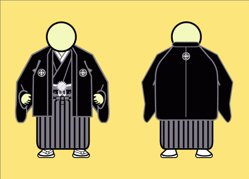
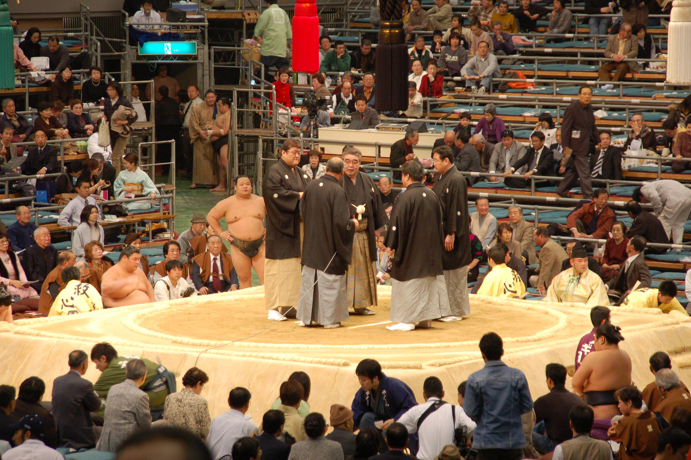
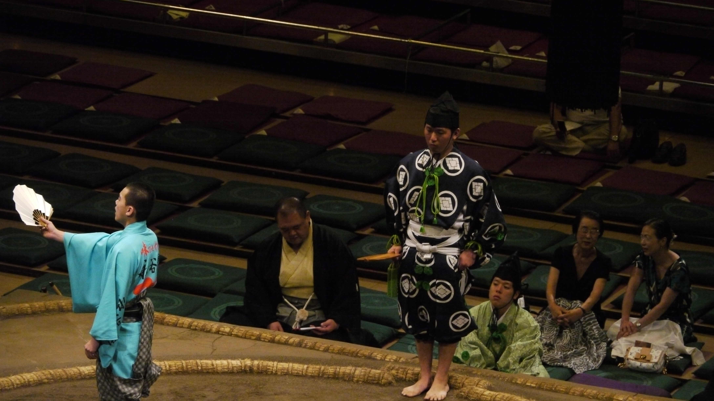

Who are the Shimpan?
A shimpan, or shinpan, is a ringside judge who sits around the dohyo and observes each bout, identifying which wrestler wins and supervising the work of the gyoji to ensure that no refereeing errors were made.

